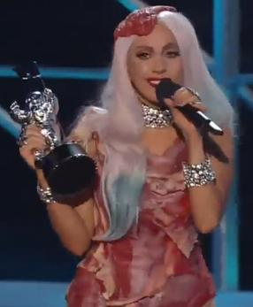

Vestido Bafonico
Confira por aqui!!!
Gaga Uh Lalá!
Vestido Bafonico
Confira por aqui!!!
Gaga Uh Lalá!

No MTV Video Music Awards de 2010 , a cantora americana Lady Gaga usou um vestido feito de carne crua
que foi comumente referido pela mídia como o vestido de carne.
Desenhado por Franc Fernandez e estilizado por Nicola Formichetti ,
o vestido foi condenado por grupos de direitos dos animais e nomeado pela revista Time como a principal declaração de moda de 2010.
A imprensa especulou sobre a originalidade da ideia do vestido de carne, comparando imagens semelhantes às encontradas na arte contemporânea e na cultura popular.
Assim como seus outros vestidos, foi arquivado, mas foi exibido em 2011 no Rock and Roll Hall of Fame depois de ser preservado por taxidermistas como um tipo de charque.
Gaga explicou após a cerimônia de premiação que o vestido era uma declaração
sobre a necessidade de lutar por aquilo em que acredita e destacou sua aversão pela política de não pergunte,não conte dos militares dos EUA.
FUNDO Gaga foi a artista mais indicada no Video Music Awards de 2010, com um recorde de treze indicações,
incluindo dois acenos para Vídeo do Ano (a primeira artista feminina a alcançar esse feito).
Ela chegou com um vestido Alexander McQueen e mudou para um número Giorgio Armani antes de vestir sua terceira e última roupa da noite:
um vestido, chapéu, botas e bolsa feitos de carne crua. Gaga usou o vestido de carne para receber seu troféu de Vídeo do Ano por " Bad Romance ";
ao aceitar o prêmio da apresentadora Cher , ela brincou: "Nunca pensei que pediria a Cher para segurar minha bolsa de carne.
"Gaga continuou a usar o vestido após o show de premiação de fotos para a imprensa e uma entrevista no The Ellen DeGeneres Show .
Gaga explicou sua interpretação do vestido para DeGeneres, afirmando: "Se não defendermos o que acreditamos e se não lutarmos por nossos direitos,
em breve teremos um tanto direitos quanto a carne em nossos ossos. " DeGeneres, que era vegano na época, escreveu mais tarde:
"Agora, eu amo Lady Gaga, mas como alguém que também ama animais,foi muito difícil para mim sentar ao lado de Lady Gaga enquanto ela usava aquela roupa,
mas isso me fez perguntar a mim mesmo: 'Qual é a diferença entre a roupa dela e uma roupa feita de couro?'DESIGN Fernandez foi abordado por seu colega estilista e estilista Formichetti para produzir o vestido,
com ele planejado ao longo de uma semana, Formichetti tendo estilizado o visual.O vestido era assimétrico, com gola encapuzada.
Fernandez escolheu cortes específicos para garantir que o vestido ficasse bem.
O bife de flanco foi escolhido como o material a ser usado, com a carne proveniente do açougue de sua família .
O vestido exigia que Gaga fosse costurado na roupa nos bastidores.
Fernandez disse sobre seu design: "Eu sabia que o vestido seria uma das outras peças incríveis que Gaga usou naquela noite.
É muito bem feito e ficava ótimo nela, dentro e fora das câmeras. Não tivemos a chance de fazer uma prova.
A única vez que ela o estava usando foi para os VMAs. Só quando eu vi no monitor eu soube que seria grande.
Fernandez relatando a opinião de Gaga em uma entrevista disse que a própria Gaga disse que cheirava bem, porque cheirava a carne.
O estilista falou sobre o que aconteceria com o vestido após a premiação, "O vestido será colocado em um arquivo com todos os vestidos dela.
Arquivos da Gaga, eu suponho. Não vai durar, essa é a beleza dele.
Quando for trazido de novo, espero que seja em uma retrospectiva, e seja um vestido diferente, o que é o melhor.
Gosto da ideia dele mudar e evoluir para outra coisa ".
Mais tarde, ele explicou que o vestido seria preservado e transformado em um tipo de jerky antes de ser arquivada.
O Hall da Fama do Rock and Roll pagou US $ 6.000 ao taxidermista Sergio Vigilato para preservar o vestido.
Ele havia sido congelado após as duas aparições na televisão, embora Vigilato tenha descoberto sinais de decomposição no vestido, que ocorreram antes de ser congelado,
e notado que estava emitindo um odor ao ser descongelado. Foi tratado com alvejante, formaldeído e detergente para matar qualquer bactéria,
e foi recondicionado por ser tingido de vermelho escuro depois de preservado para dar a mesma aparência de quando usado pela primeira vez.
Porém, após a preservação, vários pedaços de carne sobraram e não foram incluídos no vestido retrabalhado.
Gaga usava um vestido de carne falsa enquanto cantava as canções " Americano " e " Poker Face " durante sua turnê Born This Way Ball.
LEGADO Anteriormente, ela havia usado um biquíni feito de carne na capa da edição japonesa da Vogue .
Fernandez credita ao vestido uma reviravolta em sua carreira, dizendo: "Sinto que tenho voz agora como artista e designer".
Embora tenha sido a terceira troca de roupa de Gaga na noite, o vestido de carne foi imediatamente descrito como "o momento da moda mais ultrajante" da noite.
Fernandez credita ao vestido uma reviravolta em sua carreira, dizendo: "Sinto que tenho voz agora como artista e designer".
Ele já havia criado itens para Gaga, incluindo uma fantasia para seu videoclipe de " Bad Romance ".
Ele passou a criar um chapéu que Gaga usou no 53º Grammy Awards em fevereiro de 2011.
O vestido foi exibido no Hall da Fama e Museu do Rock and Roll em 2011 como parte de uma exposição intitulada "Mulheres que fazem rock: visão, paixão, poder".
Uma pesquisa do site MyCelebrityFashion.co.uk classificou o vestido como a roupa mais icônica de 2010, batendo o vestido de noivado de Catherine Middleton em segundo lugar.
Resumindo 2010 por meio de uma série de listas, a Time votou no vestido de carne como sua declaração de moda mais popular de 2010.